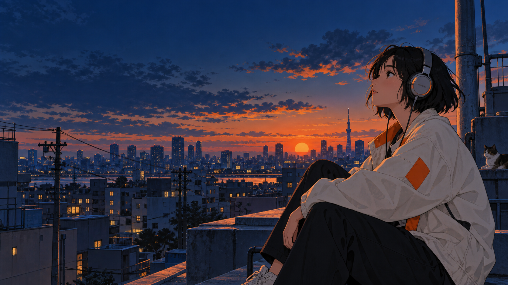

/

Dale play
a tu mundo.
Openings que te encienden.
Endings que se quedan con vos.
En la cabina
En pausaPreparando tu selección
Una nueva conexión.
Siempre volvés a estos
Historias que reconocés con los primeros acordes.
Encontrá tu próximo replay
Explorá, guardá y dejá que un tema te lleve al siguiente.